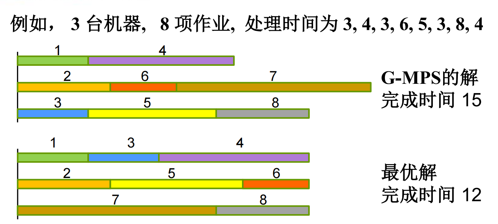
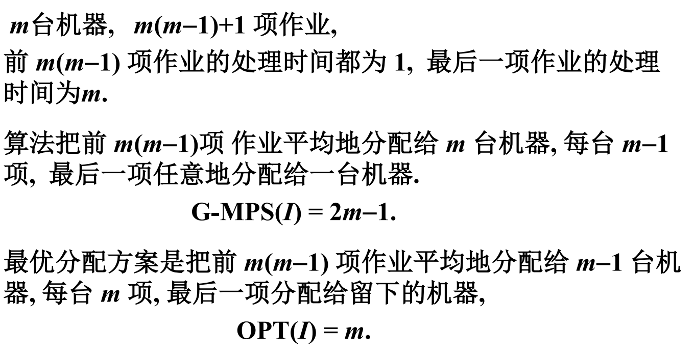
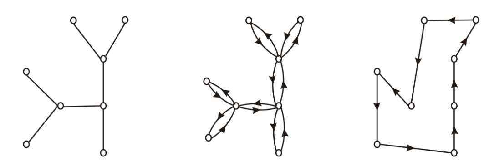
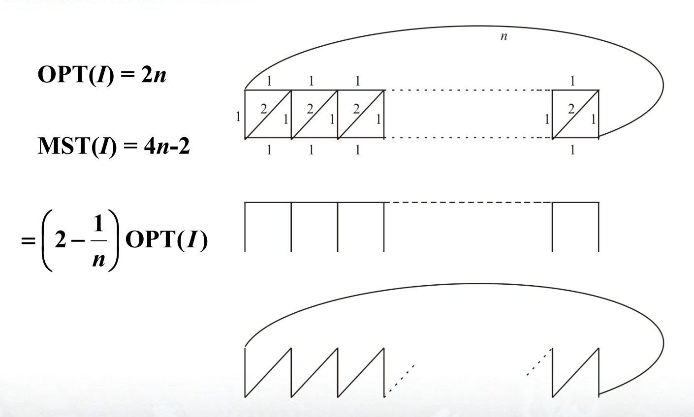
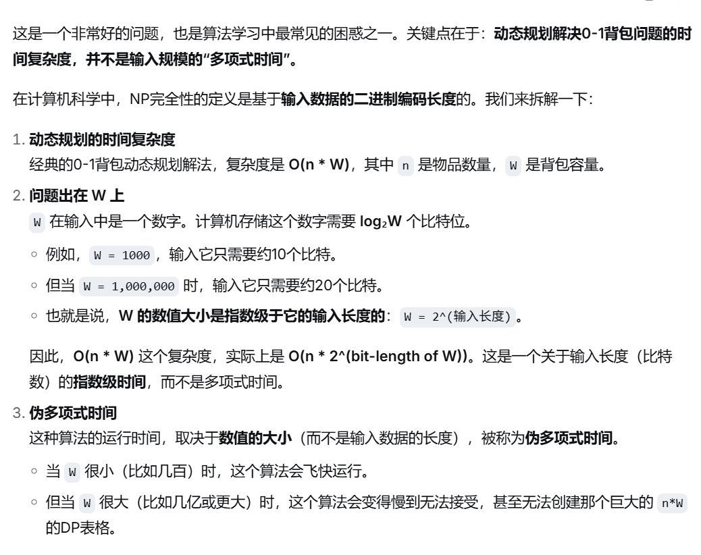

本文最后更新于 2026年11月5日 晚上
北京大学信息科学技术学院
算法设计与分析(2026春)的课程笔记
第十章：近似算法
经过第九章的学习，我们知道许多组合优化问题对应的判定问题是NPC，在P=NP没被证明出的前提下，根本无法找到多项式时间内的最优算法
但我们显然又不能置之不理，摆烂到底，这些问题还是有许多现实意义的，所以我们退而求其次，找一个足够好的可行解，因此寻找近似算法就顺理成章
近似算法及其近似比
假设组合优化问题为Π，A是一个多项式时间算法，如果对于Π的每一个实例I，算法A都能输出I的一个可行解σ，那么我们就称A为Π的近似算法
记作A(I)=c(σ)，其中c(σ)为σ的值
如果A(I)=OPT(I)恒成立，即A总是输出I最优解，则称A是Π的最优化算法
当Π为最小化问题时，记rA(I)=OPT(I)A(I)
当Π为最大化问题时，记rA(I)=A(I)OPT(I)
如果对Π的每个实例I，都有rA(I)≤r，则称近似算法近似比为r，A为r-近似算法
如果r为常数，称A具有常数比
显然r≥1，并且越接近1越好
对于NP难的组合优化问题，可以按照可近似性分为以下3类：
- 对于任意小的ϵ>0，存在(1+ϵ)-近似算法，该问题为完全可近似的
- 存在具有常数比的近似算法，该问题为可近似的
- 只要P=NP不成立，就不存在具有常数比的近似算法，该问题为不可近似的
当然分类大前提是P=NP
并且不可近似的算法并非没有近似算法，而是没有常数比近似算法，可能有近似比为$n,log n $的算法
下面我们看一个简单例子：最小顶点覆盖问题
任给G=<V,E>，求G顶点数最少的顶点覆盖
我们采用MVC近似算法：开始令V′为空集，任取一条边(u,v)，将u,v加入V′并删去u,v及其关联的边，重复上述过程直至所有的边都被删去为止，则V′即为所求
时间复杂度O(∣E∣)
近似比：
设∣V′∣=2k，V′由k条互不关联的边的端点组成，为了覆盖这k条边需要k个顶点从而OPT(I)≥k，因此
OPT(I)MVC(I)≤k2k=2
当G刚好由k条互不关联的边构成时，取到等号
这表明MVC近似比不可能小于2，故MVC为2-近似算法
多机调度问题
任给有穷作业集A，m台相同机器，作业a的处理时间为正整数t(a)，每一项作业都可以在任意机器上处理
问如何把作业合理分配给机器，使得完成所有作业时间最短
即如何把A划分为m个不相交子集Ai，使得
max[Σa∈Ait(a)∣i=1,2,...,m]最小
贪心法
定义负载为：分配给一台机器的作业 处理时间之和
我们采用G-MPS贪心：
按照输入顺序分配作业，把每一项作业都分配给当前负载最小的机器，如果当前负载最小的机器不止一台，则随机分配(或者就分给序号最小的也可)

上面是一个实例，可以看到这种贪心不一定最优
对于每一个有m台机器的实例I
我们可以证明：G−MPS(I)≤(2−m1)OPT(I)
显然有OPT(I)≥m1Σa∈At(a)
最大负载不小于平均负载
OPT(I)≥maxa∈At(a)
最大负载不小于单个任务负载
假设机器M负载最大，为t(M)，b为最后被分配给M的作业，根据算法，在分配b时M负载最小，最小负载不大于平均负载，我们有
t(M)−t(b)≤m1(Σa∈At(a)−t(b))
LHS为该机器在b之前的负载，RHS为除去b剩下作业时间的平均值，也即在分配b之前所有机器平均负载
于是G−MPS(I)=t(M)
≤m1(Σa∈At(a)−t(b))+t(b)
=m1Σa∈At(a)+(1−m1)t(b)
≤OPT(I)+(1−m1)OPT(I)
=(2−m1)OPT(I)
得证

上面是一个取等的实例，故G-MPS也是2-近似算法
贪心法的改进
递降贪心法DG-MPS：先对数据按照处理时间由大到小进行排序，再运用G-MPS
增加了排序时间O(nlogn)，依旧是多项式算法
对于每一个有m台机器的实例I
我们可以证明：DG−MPS(I)≤(23−2m1)OPT(I)
假设作业处理时间由大到小进行排序之后为a1,a2,...,an，仍然假设负载最大的机器为M，最后分配给M的机器为ai
假如M只有一个作业，i=1，必为最优解
否则M有大于等于两个作业，则i≥m+1，从而OPT(I)≥2t(am+1)
类似上面的证法，我们有：
DG−MPS(I)=t(M)≤m1(Σk=1nt(ak)−t(ai))+t(ai)
=m1Σk=1nt(ak)+(1−m1)t(ai)
≤OPT(I)+(1−m1)⋅21OPT(I)
=(23−2m1)OPT(I)
从而DG-MPS为23-近似算法
货郎问题
本章中考虑的货郎问题默认满足三角不等式
即对于任意三个城市i,j,k，他们之间距离满足d(i,j)+d(j,k)≥d(i,k)
最邻近法(NN)
从任意城市开始，每一步取 离当前城市最近的 尚未到过的城市 作为下一个城市，如果这样的城市不止一个，就任取一个，直至走遍所有城市回到出发点
我们可以证明NN(I)≤21(⌈logn⌉+1)OPT(I)
并且对于任意充分大的n，存在满足三角不等式的n个城市的实例I，使得
NN(I)>31(log(n+1)+34)OPT(I)
定理证明从略，该定理表明了NN法的近似比可以取到正无穷
因此无法实际应用
最小生成树法(MST)
首先求图的一棵最小生成树T，然后，沿着 T 走两遍得到图的一条欧拉回路，最后，顺着这条欧拉回路，跳过已走过的顶点，抄近路得到一条哈密顿回路
求最小生成树和欧拉回路都可以在多项式时间内完成，故算法是多项式时间的，下面是一个例子

对于所有满足三角不等式实例I，MST(I)<2OPT(I)
这是由于从HC中删去一条边就得到一棵生成树，故T的权小于OPT(I)，沿着T走两遍的长度自然小于2OPT(I)，并且由于满足三角不等式，所以抄近道不会增加长度
故MST为2-近似算法，下面是一个取等实例

最小权匹配法(MM)
- 求图的一棵最小生成树T
- 记T所有奇数度顶点在原图中导出子图H，H有偶数个顶点
- 求 H 的最小匹配 M
- 把 M 加入 T 得到一个欧拉图，求这个欧拉图的欧拉回路;
- 沿着这条欧拉回路，跳过已走过的顶点，抄近路得到一条哈密顿回路
求任意图最小权匹配的算法是多项式时间的，因此 MM 是多项式时间的
对于所有满足三角不等式实例I，MM(I)<23OPT(I)
这是由于满足三角不等式，记H中最短HC为C，C的长度不超过原图中最短HC的长度OPT(I)，沿着C隔一条边取一条边，得到H的一个匹配，总能使这个匹配的权不超过C长的一半，因此M的权不超过2OPT(I)，又因为T的权小于OPT(I)，所以求得欧拉回路的长小于23OPT(I)，抄近路不会增加长度，得证
故MM为23-近似算法，取等实例略去
货郎问题的难度
只要P=NP，不满足三角不等式要求的货郎问题就是不可近似的
我们证明逆否命题：
若不然，假设近似算法为A，近似比r≤K,K为正整数
任给图G=<V,E>，如下构造实例IG：
城市集V，∣V∣=n，每一对城市u,v∈V的距离为
d(u,v)=1,if(u,v)∈E;Kn,else
如果G有HC，则OPT(IG)=n,A(IG)≤rOPT(IG)≤Kn
否则OPT(IG)≥Kn,A(IG)≥OPT(IG)>Kn
故G有HC ⟺A(IG)≤Kn
于是下面的算法可以判断G是否有HC：
- 对I构造货郎问题实例IG
- 对IG运用近似算法A
- 如果A(IG)≤Kn则输出Yes，否则输出No
由于K为固定常数，构造IG可在O(N2)内完成，∣IG∣=O(n2)
A是多项式时间，且A对IG可在n的多项式时间内完成计算
从而上述算法为HC的多项式时间算法，又因为HC是NP完全，所以P=NP，得证
背包问题
任给n件物品和一个背包，物品i重量wi，价值vi，i≤i≤n，背包重量限制为B，wi,vi,B均为正整数，问把哪些物品装入背包才能在不超过重量限制的条件下使价值最大
即求子集S∗⊆[1,2,...,n]使得
Σi∈S∗vi=max[Σi∈Svi∣Σi∈Swi≤B,S⊆[1,2,...,n]]
下面不妨设所有物品重量wi≤B，否则将该物品排除在外即可
一个简单的贪心算法(G-KK)
- 按单位重量价值从大到小排列物品 $\frac{v_1}{w_1} \ge \frac{v_2}{w_2} \ge … \ge \frac{v_n}{w_n} $
- 顺序检查每一件物品，只要能装得下就装，设装入背包总价值V
- 求vk=max[vi∣i=1,2,...,n]，若vk>V，则将背包里物品换成物品k
设物品l为第一件未装入背包的物品，由于按照单位重量价值从大到小排列物品，故
OPT(I)<G−KK(I)+vl
≤G−KK(I)+vmax
≤2G−KK(I)
故OPT(I)<2G−KK(I)，G-KK为2-近似算法
多项式时间近似算法(PTAS)
输入ϵ>0，实例I
- 令m=⌈ϵ1⌉
- 按单位重量价值从大到小排列物品 $\frac{v_1}{w_1} \ge \frac{v_2}{w_2} \ge … \ge \frac{v_n}{w_n} $
- 对每一个t=1,2,...,m和t件物品，检查这t件物品重量和，如果和不超过B，则接着用G-KK把剩余物品装进背包
- 比较得到的所有装法，取其中价值最大的作为近似解
核心思想：枚举前m个关键物品，对剩余部分再用贪心
PTAS其实是一簇算法，对固定的ϵ>0，PTAS为一个算法，记作PTASϵ
定理：对每一个ϵ>0的0-1背包实例I
OPT(I)<(1+ϵ)PTASϵ(I)
且PTASϵ时间复杂度为O(nϵ1+2)
证明从略，可知该算法是(1+ϵ)-近似
伪多项式时间算法
其实就是我们最常用的dp
一开始我在想着为什么dp不是多项式时间算法，必须加上伪字
这里放一个deepseek的解释

完全多项式时间算法(FPTAS)
输入ϵ>0，实例I
- 令b=max[⌊(1+ϵ1)nvmax⌋,1]
- 令vi′=⌈bvi⌉,1≤i≤n，把所有vi换成vi′，记新实例为I′
- 对I′应用算法A得到解S，把S取为实例I的解
核心思想：把价值缩小，从而dp的状态数减少
则满足定理：
OPT(I)<(1+ϵ)FPTAS(I)
并且FPTAS时间复杂度为O(n3(1+ϵ1))，证明从略
笔者按：这一章相比前两章来说还是简单了不少，没有太多抽象概念，主要就是数学推导和复杂度分析，不过笔者还是在分析背包问题时适当略去了一些证明过程……